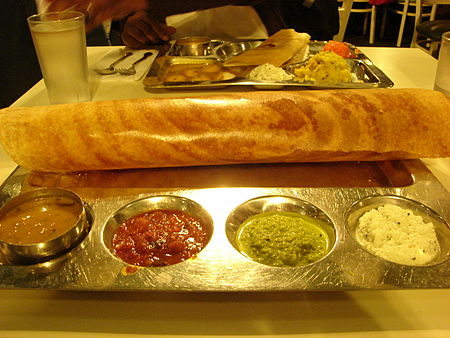

Masala Dosa

Description
Masala Dosa is a popular South Indian dish consisting of a thin, crispy crepe made from fermented rice and lentil batter, filled with a spicy potato filling.
Ingredients
- Dosa batter (fermented rice and lentil batter)
- Potatoes
- Mustard seeds
- Cumin seeds
- Curry leaves
- Green chilies
- Turmeric powder
- Onions (optional)
- Coriander leaves
- Oil or ghee
Steps
- Prepare the Potato Filling:
- Boil and peel the potatoes. Mash them coarsely and set aside.
- Heat oil in a pan, add mustard seeds, cumin seeds, and curry leaves. Sauté until they splutter.
- Add chopped onions, green chilies, and turmeric powder. Sauté until onions turn translucent.
- Add the mashed potatoes, salt, and chopped coriander leaves. Mix well and cook for a few minutes. Set aside.
- Prepare the Dosa Batter:
- Mix fermented rice and lentil batter with water to achieve a pouring consistency.
- Heat a non-stick pan or a dosa tawa.
- Pour a ladleful of batter onto the center of the tawa and spread it thinly in a circular motion.
- Drizzle some oil or ghee over the dosa and cook until it turns golden brown and crisp.
- Place a portion of the potato filling on one side of the dosa and fold it into a cylindrical shape.